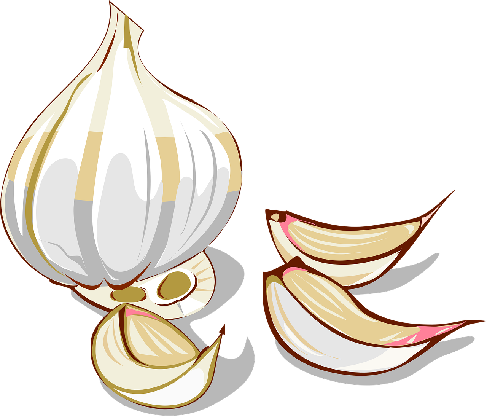
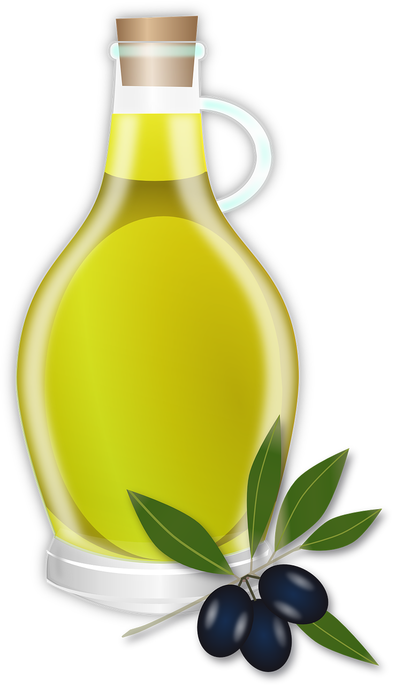

Pasta Aglio Olio


Description
This is a very simple and quick dish. Perfect for your midnight snack or after work meal.
Ingredients
- 1 pkg of Pasta
- Olive Oil
- 4 Red Chillies
- 1 Whole Garlic
Steps
- Chop onions and garlic finely, and saute them in a large pot. Use generous amount of Olive Oil
- Boil the Pasta. Stop 2 Minutes early, since they will cook finished in the pan with our Aglio Olio
- Add the Red Chillies to the pan and the boiled Pasta
- Stir them nicely. You can add some Pasta water, if you want more creaminess
- Serve with some Parmesan.
Home